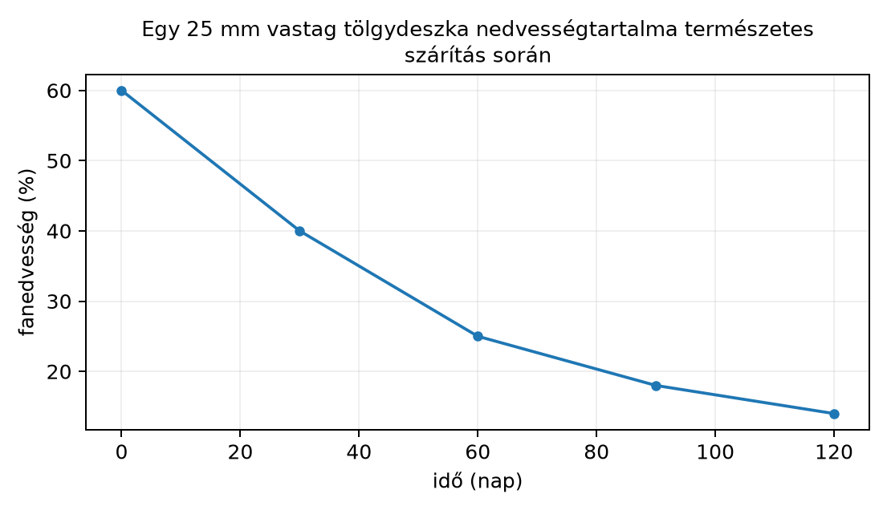

A frissen fűrészelt deszka a műhelybe kerülve szinte „él”: szárad, mozog, reped. Ha ezt a mozgást nem értjük, a kész bútor vetemedik, a ragasztás elválik, a felületkezelés megreped. A szárítás nem passzív várakozás, hanem a faanyag előkészítésének egyik legfontosabb művelete.
A frissen vágott fa kétféle vizet tartalmaz. A sejtüregekben szabad víz, a sejtfalakban kötött víz van. Amíg a szabad víz távozik, a fa mérete alig változik. Amikor a nedvességtartalom a rosttelítettségi határ alá csökken, megindul a kötött víz leadása, és ezzel a zsugorodás. Ez a változás a A faanyag nedvességtartalma: mérés és számítás és a Zsugorodás, dagadás és vetemedés: a fa „mozgása” alfejezetekben tanult jelenség.
Az alábbi görbe egy 25 mm vastag tölgydeszka természetes szárításának szemléltető lefutását mutatja. A valós adatok fafajtól, vastagságtól, évszaktól és időjárástól erősen függnek; itt a tanulás a lényeg.

A görbe eleinte meredek, majd egyre lassabban csökken. A fa először a könnyen távozó szabad vizet adja le, utána a sejtfalakból egyre nehezebben válik meg a kötött víztől.
Definíció. Szárítás alatt a fa nedvességtartalmának szabályozott csökkentését értjük, olyan értékre, amely a felhasználási hely várható egyensúlyi fanedvességéhez közelít. A szárítás célja a méretváltozás csökkentése, a repedés és gombásodás megelőzése, a ragasztás és felületkezelés előkészítése.
Definíció. Természetes (szabadtéri) szárítás a fűrészáru szellős, fedett vagy szabad ég alatti máglyában, külső hőenergia nélküli száradása. Mesterséges szárítás a fűrészárut zárt kamrában, szabályozott hőmérsékleten, páratartalommal és légárammal szárítja.
Definíció. Szárítási menetrend a kamrás szárítás során előírt hőmérséklet-, páratartalom- és időértékek sorozata. A menetrendet fafaj, vastagság, kiinduló és cél-nedvesség szerint állítják be.
Definíció. Kondicionálás a megszárított faanyag pihentetése a műhelyben vagy a szárítóban, hogy a keresztmetszet nedvességeloszlása kiegyenlítődjön, és a szárítási feszültségek csökkenjenek.
Szabály. A szárítás sebességét a fa nedvességleadó képessége, a hőmérséklet, a levegő relatív páratartalma és a légáram sebessége határozza meg. A túl gyors szárítás repedést okoz. Figyelem. A szárítási görbe és minden időadat tájékoztató; a valóságos értékek gyártói/szárítóüzemi adatokból veendők (ellenőrizendő).
A frissen fűrészelt deszkát máglyába rakjuk. A máglya lényege, hogy minden deszka körül levegő járjon, a víz távozhasson, és a fa ne görbüljön meg a saját súlya alatt.
Eljárás. Természetes szárító máglya rakása:
A természetes szárítás önmagában ritkán viszi a fát 12–14 % alá, mert a szabadtéri levegő egyensúlyi fanedvessége éghajlattól függően jellemzően 14–18 % (tájékoztató, ellenőrizendő). A műhelyben ezért a szabadtéren beszárított anyagot tovább kell klimatizálni, vagy mesterségesen szárítani.
Megjegyzés. A természetes szárítás időtartama durván becsülhető, de erősen függ a fafajtól, a deszka vastagságától, az évszaktól és a máglya szellőzésétől. Tájékoztató érték: 25 mm vastag puhafa deszka tavasztól őszig 20 % alá száradhat, 50 mm vastag tölgy deszka akár egy évig is száradhat (ellenőrizendő: helyi szárítási tapasztalat, szakkönyv).
A mesterséges szárítás zárt kamrában, szabályozott körülmények között zajlik. A cél a nedvességtartalom gyors, de kíméletes csökkentése a felhasználási célnedvességre.
Konvekciós (hagyományos) kamrás szárítás. A kamrában fűtött levegő kering, elvezeti a nedvességet, és friss levegőt kever be. A levegő hőmérsékletét és relatív páratartalmát szakaszosan változtatják. A szárítási menetrend szemléltető része:
| Szakasz | Idő (h) | Léghőmérséklet (°C) | Relatív pára (%) | Cél fanedvesség (%) |
|---|---|---|---|---|
| Bemelegítés | 0–12 | 35 | 90 | 60 |
| Első szárítási szakasz | 12–48 | 45 | 70 | 30 |
| Második szárítási szakasz | 48–96 | 55 | 50 | 15 |
| Kondicionálás | 96–120 | 50 | 65 | 12 |
A táblázat tanulási példa; a valós menetrendet a szárítóüzem és a gépkönyv adja meg (ellenőrizendő).
A rajzon látszik, miért kell a máglyát a kamrában is lécezve, egyenletes légréssel rakni: a ventilátorok által keringetett levegő a lécsorok között áramlik át. A HTML-változat a menetrend szakaszai szerint mutatja a csappantyúk és a nedvesítő állapotát (elvi szemléltetés).
Gépbiztonság. A kamrás szárító és a gőzölő csak betanított, felügyelt kezelővel üzemeltethető, a gépkönyv szerint. Forró felületek, gőz- és forrázásveszély; hőálló védőkesztyű és védőszemüveg szükséges. A kamra vészleállítóval, hőmérsékletfigyelővel és tűzjelzővel legyen ellátva. A kezelő a hőkezelés és gőzölés során soha ne nyissa fel a kamrát a lehűlés előtt. Kamrába csak a fűtés és a ventilátorok leállítása és reteszelése (főkapcsoló lezárva, ellenőrizendő: gépkönyv), kiszellőztetés és lehűlés után, második személy jelenlétében lépj be; a magas hőmérséklet és páratartalom hőstresszt okoz. Az ajtónak belülről is nyithatónak kell lennie. A rakatot targoncával csak jogosult kezelő mozgatja.
Kondenzációs szárítás. A kamra levegőjét egy hűtőfelületre vezetik, ahol a nedvesség kicsapódik, így a kamra zárt körben üzemel. A hőmérséklet általában alacsonyabb, mint a konvekciós kamráé, ezért kíméletesebb lehet a vastagabb, érzékeny fafajoknál (tájékoztató, ellenőrizendő: gépkönyv, szárítási adatlap).
Vákuumos szárítás. A kamrában csökkentett nyomást tartanak fenn, így a víz alacsonyabb hőmérsékleten forr; a fából gyorsabban távozik a nedvesség. A vákuumos szárítás gyorsabb és kíméletesebb lehet, de költségesebb. Főként kis tételű, vastagabb, értékes keményfa fűrészárunál használják, ahol a konvekciós szárítás nagyon hosszú vagy repedésveszélyes (ellenőrizendő: szakkönyv, gépgyártó).
Szabály. Mesterséges szárításnál a fát a kívánt átlagnedvességig szárítják, majd a kamrában vagy a műhelyben kondicionálják, hogy a felületi és belső rétegek nedvességkülönbsége kiegyenlítődjön. A hirtelen hőmérséklet-emelés vagy a túl alacsony páratartalom repedést okoz.
Gőzölés. A faanyagot zárt kamrában, gyakran 80–100 °C körüli telített gőzben kezelik (tájékoztató, ellenőrizendő). A gőzölés célja lehet:
Gépbiztonság. Gőzölésnél a legnagyobb veszély a forró gőz és a nyomás. A kamrát csak lehűlés után, a gépkönyv szerint szabad kinyitni. Hőálló kesztyű, védőszemüveg és zárt ruházat kötelező.
Permetezés. A frissen vágott rönköt vagy a fűrészáru bütüjét rendszeresen vízzel permetezik, hogy lassítsák a hirtelen kiszáradást és csökkentsék a bütürepedést. Ha a permetezőoldat faanyagvédő szert is tartalmaz, akkor az vegyi anyag: a biztonsági adatlap és a termék műszaki adatlapja szerint kell eljárni, védőfelszereléssel.
Áztatás. A fát meleg vízben vagy vízgőzben áztatják, főleg hajlítás vagy furnérkészítés előtt. Az áztatás megkönnyíti a rostok elcsúszását, csökkenti a repedés esélyét. A gyakorlatban a hajlítás előtti gőzölés és áztatás gyakran összekapcsolódik.
A szárítás során a fa tömegéből a víz távozik. A fa abszolút száraz tömege () nem változik, csak a nedvességtartalom csökken. Az elpárolgó víz tömege:
ahol:
Levezetés.
A nedves fa tömege nedvességtartalomnál:
A szárítás előtti tömeg: , a szárítás utáni tömeg: . A tömegkülönbség pontosan a víz:
A képlet csak akkor érvényes, ha és ugyanarra a száraz tömegre vonatkoztatott százalék. A fa vastagsága, fafaja a képletben közvetlenül nem szerepel; a száraz tömegben és a nedvességtartalomban van benne.
Számítás. 500 kg abszolút száraz tömegű tölgy fűrészáru nedvességtartalmát 60 %-ról 12 %-ra csökkentjük. Mennyi víz távozik?
Adott: , , . Keresett: .
Tehát 240 kg vizet kell elpárologtatni. Ez egy 500 kg szárazanyag-tartalmú adagnál igen jelentős tömegcsökkenés: a fa nedves tömege 800 kg-ról 560 kg-ra csökken.
Példa. Egy deszka elpárolgó vízmennyisége
Egy bükk deszka mérete: hosszúság , szélesség , vastagság . Az abszolút száraz sűrűség tájékoztató értéke (szakkönyvi adat, ellenőrizendő). A kezdeti nedvességtartalom , a kívánt végső nedvességtartalom . Határozzuk meg, mennyi víz távozik a deszkából.
A deszka száradás közben 2,04 kg vizet veszít. A nedves deszka kezdeti tömege , végső tömege ; a kettő különbsége szintén 2,04 kg. Az ellenőrzés megerősíti a képletet.
A szárítás közben a fa eltérő mértékben szárad a felületen és a belső rétegben. Ez belső feszültséget okoz. A hibák akkor keletkeznek, ha a feszültség meghaladja a fa szilárdságát.
Bütürepedés. A deszka vége sokkal gyorsabban adja le a nedvességet, mint a belső rész, mert a rostirányú vízvezetés nyitott. A bütü zsugorodik, és reped. Megelőzés: bütüvédelem, lassú szárítás.
Felületi repedés. Ha a felület túl gyorsan szárad, húzófeszültség ébred, és a felület megreped. Megelőzés: alacsonyabb hőmérséklet, magasabb páratartalom.
Kéregképződés. A szárítás elején a gyorsan száradó külső réteg zsugorodna, de a nedves belső rész nem engedi: a felület húzott, a belső rész nyomott. Ha a felület nem reped el, ebben a megnyúlt állapotban megszilárdul („kéreg”). Később, amikor a belső rész is szárad és zsugorodna, a merev kéreg tartja: ekkor a felület nyomott, a belső rész húzott lesz. Ez a feszültségfordulás okozza a belső repedést.
Belső repedés (méhsejtesedés). A kéreg miatt a belső réteg nem tud zsugorodni, majd amikor végül kiszárad, a belső húzófeszültség repedéseket okoz. A deszka kívül épnek tűnik, belül repedt. Megelőzés: mérsékelt szárítási sebesség, kondicionálás.
Vetemedés. Az egyenetlen nedvességeloszlás és az anatómiai irányok eltérő zsugorodása miatt a deszka teknősödik, kardosodik, csavarodik. Megelőzés: egyenletes lécezés, megfelelő súlyterhelés, lassú, egyenletes szárítás.
Elszíneződés. A lassú, meleg szárításnál gombák okozhatnak kékülést; a vas-tannin reakció sötét foltokat hozhat létre; a túl magas hőmérséklet barnulást okozhat. Megelőzés: gyors kezdő szellőzés, tiszta lécek, a hőmérséklet betartása.
A kamrából kivett fűrészáru felületi rétegei gyakran szárazabbak, mint a belső mag. A nedvességprofil kiegyenlítéséhez a fát a műhelyben pihentetni kell, mielőtt felhasználjuk.
Eljárás. Kondicionálás a felhasználás előtt:
A kondicionálás csökkenti a vetemedés, a későbbi repedés és a ragasztási hiba esélyét.
A szárított és kondicionált anyagot felhasználás előtt ellenőrizni kell:
| Hiba | Ok | Helyes gyakorlat |
|---|---|---|
| A deszka bütykös, teknős | A túl gyors, egyenetlen szárítás és a rossz évgyűrűállás | Lassú, egyenletes szárítás; a rakás nehezítése; mozgásbiztos szerkezet tervezése |
| A bütü repedezik | A bütü nagyon gyorsan szárad | Bütüvédelem már a máglyán |
| A felület reped | Túl magas hőmérséklet, túl alacsony páratartalom | Mérsékelt menetrend, magasabb pára |
| A deszka kívül ép, belül repedt | Kéregképződés, majd belső feszültség | Lassú szárítás, kondicionálás |
| Kékülés a rakásban | Meleg, nedves, rosszul szellőző máglya | A lécek rendes kiosztása, alulról jövő szellőzés, gyors kezdeti száradás |
Egy asztalos frissen vágott, 60 % nedvességtartalmú tölgy deszkát használt egy asztallaphoz. A lapot ragasztás után csiszolta, lakkozta, és hetekkel később a vevő reklamációt tett: a lap teknősödött, a bütünél repedések jelentek meg, a lakkréteg megrepedt. A hiba oka: a fa nem volt szárítva és kondicionálva. A deszkát csak a műhelyben tárolták pár napig, majd azonnal feldolgozták. A nedves fa a lakkozás után tovább száradt; a zsugorodás a szerkezetben feszültséget okozott. A tanulság: a faanyag nedvességtartalmát a felhasználás előtt mindig mérjük, és a felhasználási hely klímájához közelítsük. A javítás: az asztallapot ki kellett cserélni, mert a repedés és vetemedés a ragasztott táblán nem volt gazdaságosan javítható.
1. feladat (A) Magyarázd meg a természetes és mesterséges szárítás közti alapvető különbséget. Nevezd meg a természetes szárítás két fő eszközét.
2. feladat (A) Számítsd ki, mennyi víz távozik 1200 kg abszolút száraz tömegű bükk fűrészáruból, ha nedvességtartalma 65 %-ról 10 %-ra csökken.
3. feladat (B) Egy 30 mm × 200 mm × 3000 mm méretű tölgy deszka abszolút száraz sűrűsége 700 kg/m³ (tájékoztató, ellenőrizendő). A kezdeti nedvességtartalom 70 %, a végső 12 %. Határozd meg az elpárolgó víz tömegét.
4. feladat (B) Sorolj fel három szárítási hibát, és mindegyiknél írd le az okot és a megelőzés módját.
5. feladat (C) Egy 50 mm vastag tölgy asztallap-alkatrészt akarunk felhasználni. Tervezz kondicionálási eljárást: milyen lépéseket, méréseket végzel, és miért van erre szükség?
6. feladat (D) Készíts egy szemléltető szárítási menetrendet (táblázatban) 25 mm vastag bükk deszkához, és számold ki a szükséges elpárologtatandó vízmennyiséget, ha 100 kg abszolút száraz tömegű anyagot 60 %-ról 12 %-ra szárítasz. Indokold, miért fokozatos a menetrend.
Önellenőrzés – válaszok. 1. Igaz: a rosttelítettségi határ fölött csak szabad víz távozik, a sejtfal mérete nem változik, ezért a fa nem zsugorodik. 2. . 3. A bütün a rostirányú vízvezetés miatt sokkal gyorsabb a száradás, ezért reped. 4. A szárított anyag pihentetése, hogy a keresztmetszet nedvessége kiegyenlítődjön és a feszültség csökkenjen. 5. A kéregképződés következtében kialakuló belső repedés (méhsejtesedés). 6. A bükk színének kiegyenlítésére (vörösesbarna szín) és a hajlítás előkészítésére.
1. feladat A természetes szárítás szabadtéri, szellős máglyában, külső hőenergia nélkül történik; a mesterséges szárítás zárt kamrában, szabályozott hőmérséklettel, páratartalommal, légárammal. A természetes szárítás két fő eszköze: a szárítóléc és a bütüvédelem.
2. feladat Adott: , , .
3. feladat
Térfogat:
.
Száraz tömeg:
.
Elpárolgó víz:
.
Ellenőrzés: a deszka kezdeti tömege
,
végső
,
különbség 7,308 kg.
4. feladat Például: (1) bütürepedés – ok: a bütü gyorsan szárad; megelőzés: bütüvédelem. (2) Kéregképződés – ok: a felület túl gyorsan szárad, a mag nedves marad; megelőzés: alacsony hőmérséklet, magasabb páratartalom. (3) Elszíneződés – ok: gomba, vas-tannin vagy túl magas hőmérséklet; megelőzés: szellős rakás, tiszta lécek, megfelelő hőfok.
5. feladat Az 50 mm vastag tölgy alkatrészt a szárításból érkezés után legalább 2–3 hétig (vastag anyag, tájékoztató, ellenőrizendő) lécezett máglyában pihentetem a műhely hőmérsékletén. A bütüket védem. Mérem a nedvességtartalmat a felületen és a bütü közelében: amíg a különbség nagy, nem dolgozom fel. A felhasználás előtt 2–3 nappal az anyagot a késztermék helyiségébe viszem, hogy a klímához igazodjon. A kondicionálás csökkenti a vetemedést és a későbbi repedést.
6. feladat Szemléltető menetrend (tájékoztató, ellenőrizendő):
| Szakasz | Hőmérséklet (°C) | Relatív pára (%) | Idő (h) |
|---|---|---|---|
| Bemelegítés | 35 | 90 | 0–12 |
| Szárítás | 45 | 70 | 12–48 |
| Szárítás | 55 | 50 | 48–96 |
| Kondicionálás | 50 | 65 | 96–120 |
Számítás:
,
,
.
.
A menetrend azért fokozatos, mert a hirtelen hőmérséklet-emelés és az
alacsony páratartalom gyors felületi száradást, repedést és
kéregképződést okozna.
A szárítás a fa nedvességtartalmának szabályozott csökkentése a felhasználás céljának megfelelő értékre. A természetes szárítás máglyában, lécezéssel és bütüvédelemmel történik, lassú, de egyszerű. A mesterséges szárítás kamrában, szabályozott menetrenddel zajlik; három fő típusa a konvekciós, a kondenzációs és a vákuumos. A szárítási hibák (repedés, kéregképződés, belső repedés, vetemedés, elszíneződés) a túl gyors vagy egyenetlen száradás következményei. Gőzöléssel színváltozást és hajlításra alkalmas állapotot érünk el; permetezéssel a bütürepedést csökkentjük; áztatással hajlítást, furnérkészítést készítünk elő. Az elpárolgó víz tömege:
A szárított anyagot felhasználás előtt kondicionálni kell, hogy a nedvességprofil kiegyenlítődjön, a feszültségek csökkenjenek, és a fa a műhely vagy a felhasználási hely klímájához igazodjon. Továbbvitt eredmény. A szárítás és kondicionálás a faanyag tárolásának, a ragasztásnak és a gyártás előtti anyag-előkészítésnek az alapja; ezt használjuk a Fűrészáru, laptermékek és furnér tárolása, nyilvántartása, a ragasztás és a felületkezelés alfejezeteiben is.